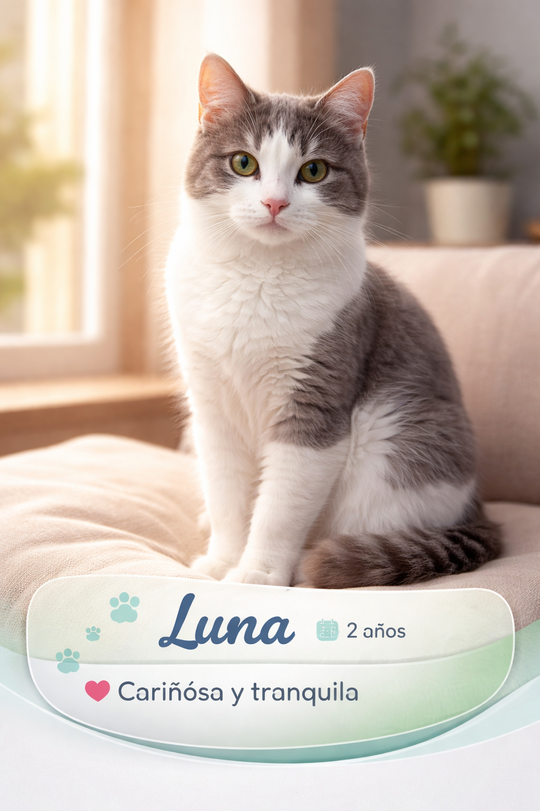
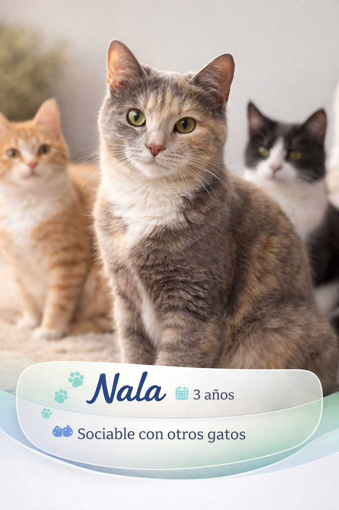
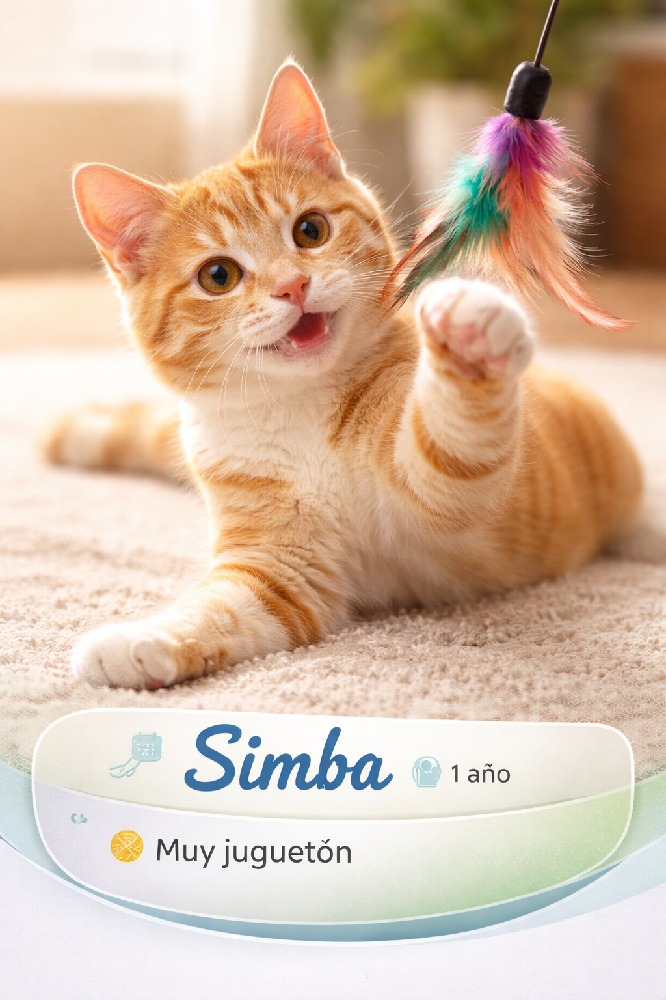

Cómo preparar tu casa para un gato adoptado
Consejos prácticos para la adaptación del gato: zonas seguras, alimentación y manejo del estrés inicial.

Noticias, historias de adopción y consejos sobre el cuidado de gatos.

Consejos prácticos para la adaptación del gato: zonas seguras, alimentación y manejo del estrés inicial.

Resultados, número de animales atendidos y próximos pasos para la campaña comunitaria.

La historia de Simba, desde el rescate hasta encontrar su hogar definitivo.